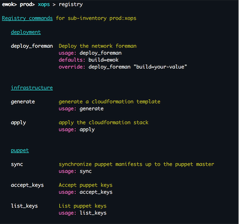

The Registry¶
Introduction¶
The registry allows you to embed your orchestration scripts within Bcome, so you are able to call them in context either from the shell or as a keyed access command.
By in context we mean that the namespace at which your custom script is called is made available to that script. This allows you to load objects representing your namespaces into the scope of your scripts, at which point you may directly interact with them.
For example, in my own installation I have the following namespaces setup:
- ewok (collection)
- prod (collection)
- all (inventory)
- xops (inventory)
I have used the registry to provide access to my application deployment scripts from my ‘all’ inventory, and my operations management scripts from my ‘xops’ inventory. When I call-up the Registry within Bcome, I get the following:
prod:xops
The ‘xops’ inventory namespace is made available to the above scripts. Within my scripts I interact with this namespace in order to provide the functionality that my scripts require.
prod:all

The ‘all’ inventory namespace is made available to the above deployment scripts. Within these scripts, I use Bcome to determine my deployment targets, and the SSH Proxy I need to traverse in order to push my code. I also use the namespace to pull out any metadata that I require that has been configured against this namespace in Bcome.
Let’s move on to how we can configure the registry. Examples in this section will all assume that you have the following Bcome network configuration:
root (collection)
|- staging (inventory)
|- app1 (server)
|- qa (inventory)
|- app1 (server)
|- production (inventory)
|- app1 (server)
|- app2 (server)
The registry.yml configuration file¶
The base Bcome directory structure looks as follow:
> project
|- bcome
|- networks.yml
Within your bcome directory the registry expects a yaml configuration file named registry.yml, as follows:
> project
|- bcome
|- networks.yml
|- registry.yml
The yaml configuration is a simple Hash structure referencing arrays of script declarations, keyed on the namespaces to which they are to be made available. The namespace key is a regular expression, allowing you to configure and make available the same orchestration script for different Bcome namespace contexts. For example, the same deployment script made available to all your environments matching a certain Bcome breadcrumb pattern.
---
(regular)expression.+:
- array
- of
- available
- scripts
(another|pattern)tomatch?:
- another
- list
- of
- scripts
When navigating within Bcome, you may invoke the registry command, which will list all the available Registry orchestration scripts available to your current namespace, along with usage instructions.
Registering a script within the Registry¶
There are three types of Registry orchestration available:
- Shortcuts to commands. You may have commands you invoke regularly on a server that you wish to make available directly from Bcome as a shortcut.
- Internal registry processes that are your own extensions to the Bcome framework. This should be used when you don’t have to hand-off your orchestration function to another process.
- External registry processes that are references to external scripts. A common use case here would be a reference to a Capistrano deployment script, where you may pass it the Bcome namespace context, and use Bcome for network discovery and reference your platform metadata.
Registering a shortcut script¶
Use case 1¶
I’m using my reference network and wish to create a shortcut for the following command that I normally run on staging:app1
> sudo supervisorctl restart unicorn
Here’s what my Registry could look like:
---
"staging:app1":
- type: shortcut
description: "Restart the unicorn process"
console_command: restart_unicorn
shortcut_command: "sudo supervisorctl restart unicorn"
group: foobar
I now have access to the command restart_unicorn from Bcome context level stag:app1, and I can invoke restart_unicorn either directly from my terminal or from the Bcome shell.
Use case 2¶
My shortcut command requires a pseudo_tty, for example, I wish to provide a shortcut for tailing a log file. My Registry could look as follows:
---
"stag:app1":
- type: shortcut
description: "Tail our Nginx access log"
console_command: tail_nginx
shortcut_command: "tail -f /var/log/nginx/access.log"
run_as_pseudo_tty: true
group: foobar
Registering an internal script¶
Use case 1¶
I’m using my reference network and have two internal scripts I’ve prepared earlier. Both manage certain puppet processes within my networks - one synchronises my manifests, and the other accepts my keys. I want to make both pieces of functionality available from Bcome with the commands sync and accept_keys. I want to just apply this to my qa and production environments, and I want to be able to call the commands as follows from my terminal:
~> bcome prod:sync ~> bcome qa:sync ~> bcome prod:accept_keys ~> bcome qa:accept_keys
Here’s what my Registry would look like:
---
"(qa|production)":
- type: internal
description: "synchronize puppet manifests"
console_command: sync
group: puppet
orch_klass: PuppetSync
- type: internal
description: "Accept puppet keys"
console_command: accept_keys
group: puppet
orch_klass: PuppetAcceptKeys
- description: This is mandatory and will describe the script when it is listed with the registry command from within Bcome
- console_command: The framework will make this command available to you to trigger your script
- group: when listing your available commands within Bcome, the framework will group your commands for you so that they’re easier to view.
- orch_klass: This references your Orchestration class. This class is loaded in by the Bcome framework, and is where you place your orchestration code.
See here for a guide on how to write your orchestration classes: Internal Hooks
Registering an external script¶
In configuring an external script, we set our Registry up so that the context within which our script is called may be passed to the external script. Our external script may then load in Bcome and the passed context, and then interact with it.
For example, say I want to make available an external deployment script to my staging inventory. My registry declaration could look as follows:
---
"staging":
- type: external
description: "Deploy my application"
console_command: deploy
group: deployment
local_command: bundle exec cap myapplication deploy build=%foo%
defaults:
build: "master"
- description: This is mandatory and will describe the script when it is listed with the registry command from within Bcome
- console_command: The framework will make this command available to you to trigger your script
- group: When listing your available commands within Bcome, the framework will group your commands for you so that they’re easier to view.
- local_command: The system command that is to be executed when you invoke your script from Bcome.
- defaults: An array of optional values passed in to your local command. They are useful in that they allow you to pass in additional parameters.
For a guide on how to configure your external script (and for what happens under the hood), see here: External Hooks
Listing available registry commands¶
The ‘registry’ command will list all your available commands. For a namespace of foo:bar, you may list your commands as follows:
> bcome foo:bar:registry